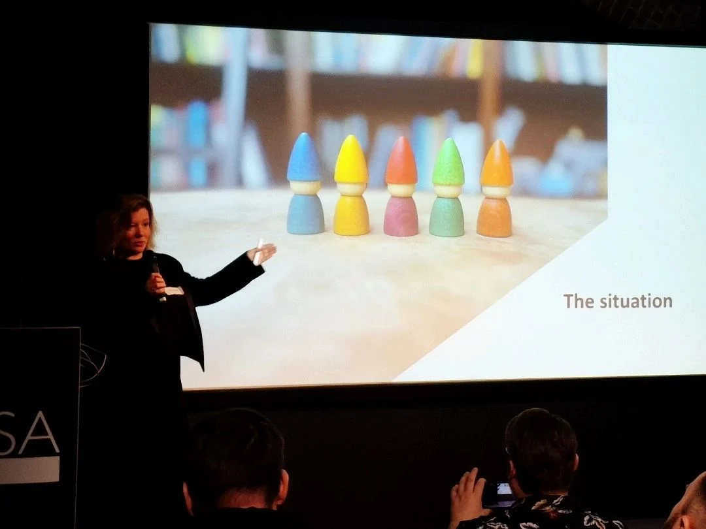

CHANTAL VAN KEMPEN / SPEAKING
A talk that moves you. Or an experience that stays.
For an audience ready to do more than listen. I bring psychology, play and imagination into interactive talks and shared experiences exploring wonder, human behaviour and different perspectives.
Discuss your event ↗
A talk
Stories, sharp questions and small experiments. For an audience that wants to think along and see differently.
A shared experience
Participants explore a question through play or an assignment, followed by conversation and reflection. See the Positive Health Experience for an example of my approach.
Explore the experience ↗For your audience
For programme makers at conferences, cultural events and organisational gatherings. You are looking for a speaker who sparks thought, or an experience where participants explore a new perspective together.
Themes to explore
Wonder & the ineffable
What do we miss when we try to explain everything? Exploring experiences beyond words, attention and seeing differently.
Connection & social cohesion
When does a stranger become one of us? On encounters, belonging and making room for different perspectives.
Possible futures & philosophy
What if your reality is not the only one? An invitation to question assumptions and explore possible futures.
How we work together
The occasion
Who is coming, what matters to them and what would you like them to take away?
The format
A keynote, an interactive talk or a shared experience. We choose a format that fits your programme, space and audience.
The connection
We connect what participants experience to their own work or lives, with space for conversation and reflection.
Previous appearances
My previous appearances include speaking, roundtable hosting and an expert panel. Each entry states my actual role.
WORM Rotterdam · Expert panel member
Playing Our Cards Right
Play and the cultural sector
Gamification Europe, Londen · Speaker
Removing Resistance in Planning by Changing Perspective
The scheduling-game case and perspective-taking. Livestreamed on 5 November 2024.
Scrum Facilitators Conference · Speaker
Playing with Time and Space
How experience design can shift our perception of time and space
ImpactFest, Den Haag · Roundtable host
Facing the Real Problem Using Learning Experience Design
Finding the real challenge through learning experience design
Conference in Utrecht · Chairwoman
Positive Psychology in Practice
Positive psychology, wellbeing and personal development